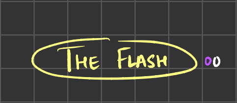

Let’s first list out the four major families
Contents
Let’s first list out the four major families#
Greedy
Divide and Conquer
Dynamic
Graphs
In these four families lies almost all of the intricacy you’ll ever need to know about algorithms. Some of these mesh with others, as you’ll see in different problems, and graphs are, as a whole, a mesh of the other three plus a bit more stuff.
1. Greedy algorithms#
Remember:
Make a smart choice
Prove that the choice is indeed smart
Prove that the choice reduces the problem to a simpler form of the original problem
That’s the classical form of a greedy algorithm’s anatomy, and the machinery needed to prove that the algorithm works.
We don’t need that to specifically beat Leetcode, but understand that:
If the problem can be reduced to a smaller version of itself, and
If this efficiently deals with the problem at hand,
you’re done!
Let us now deal with the classic “lesson 1” of greedy algorithms!
The knapsack problem!#
# You have a backpack with a certain capacity.
# In front of you are some items of treasure.
# You want to fill up the bag with the highest amount of value possible.
# Each item is an array of two elements, with the first element being its value,
# and the second one being its weight.
# What is a smart decision you can make to ease the problem along?
# 1. Put in the lightest objects!
# Not such a good idea, since you'll have objects that have a high value, but high weight.
# 2. Put in the most valuable objects!
# Again, not such a great idea, since this means you'll miss an optimum solution where the
# sum of lighter items' value exceeds that of one valuable object.
# 3. Find a balance!
# Indeed, a ratio is what you're looking at as a solution
# to this one! Clearly, we want the
# value to be maximized and the weight to be minimized,
# so you're looking at value/weight ratio!
def knapsack_v1(capacity,items):
value_weight_ratios = []
for item in items:
value_weight_ratios.append(item[0]/item[1])
# Alright, so you've got an idea of what you wish to do! But now comes the next part.
# You want to do this whole op in an efficient manner that lets you easily recover items
# in descending order of value-weight ratio.
# Solution:
# A. Just write indices! Apply an insertion sort!
def knapsack_v2(capacity, items):
value_weight_ratios = []
for item,index in enumerate(items):
ratio = item[0]/item[1]
if len(value_weight_ratios) == 0:
value_weight_ratios.append([ratio,index])
else:
breakflag=False
for i in range(len(value_weight_ratios)):
if value_weight_ratios[i][0]<ratio:
value_weight_ratios.insert(i,[ratio,index])
breakflag=True
break
if not breakflag:
value_weight_ratios.append([ratio,index])
# Sure, this works, but it's rather... Inelegant, to put it mildly.
# This is how I'd do it if I had no access to libraries or sort APIs though.
# If I DID have access to sort APIs, this problem becomes trivial:
# B. Make a lambda!
def knapsack_v3(capacity,items):
items.sort(key=lambda x: x[0]/x[1],reverse=True)
# Cool! Now what? Well, we just need to sequentially run through the array
# and pick items up as we go! Of course, an item with a higher weight
# than the current capacity will be jumped over.
def knapsack_v4(capacity,items):
items.sort(key=lambda x: x[0]/x[1],reverse=True)
print("Items sorted in descending value metric:",items)
value=0
while capacity>0:
[val,wt]=items.pop(0)
if(wt>capacity):
print("Passing over [",val,",",wt,"] , too heavy!")
continue
value+=val
capacity-=wt
print("Picked up [",val,",",wt,"]")
return value
# Time to test!
capacity = 10
items=[[100,15],[50,10],[60,7],[10,3]]
print("Best value is",knapsack_v4(capacity,items))
# To recap:
# 1. Make a smart decision!
# We choose the item that has the best value-to-weight ratio that will fit
# inside the bag!
# 2. Prove that the decision is smart!
# To be brief, the score assigned to an item is directly proportional to its value
# and inversely proportional to its weight. This is why the decision is smart!
# 3. Prove that the decision reduces the size of the problem!
# At each epoch, we reduce the size of the problem set by one item, guaranteed.
Items sorted in descending value metric: [[60, 7], [100, 15], [50, 10], [10, 3]]
Picked up [ 60 , 7 ]
Passing over [ 100 , 15 ] , too heavy!
Passing over [ 50 , 10 ] , too heavy!
Picked up [ 10 , 3 ]
Best value is 70
Let’s now try this on a problem in the wild! It won’t be obvious at first how this problem can be solved using greedy methods, but let’s break it down!
Leetcode 11: Container with most water#
You are given an integer array height of length n. There are n vertical lines drawn such that
the two endpoints of the ith line are (i, 0) and (i, height[i]).
Find two lines that together with the x-axis form a container, such that the container
contains the most water.
Return the maximum amount of water a container can store.
Notice that you may not slant the container.
Right, let’s make sense of this problem first.
You’ve got these bars that correspond to water barriers. Trivially, the height of the smallest of the two bars multiplied by the distance between them defines the area of the water.
Cool, but how do you make this problem tick? What’s a smart decision?
Let’s run through some candidates!
Pick the tallest/furthest bars, this isn’t even a greedy problem lol
Well, the tallest bars, even in the above example, would not work, since they have an area of 8x5 = 40, which is smaller than the actual answer, 49. As for the furthest, you’d literally only manage an area of 8 square units.
Cast a wide net and start to tighten it. Take the leftmost and rightmost one, get the area, and try to improve it.
Okay, how?
1. Move the taller bar to find an even taller one
Okay, this is a joke option, ofc it won't work, since area is driven by the smaller bar.
2. Move the shorter bar to find a taller one
Definitely a smart decision!
Okay, how do we know that this is a smart decision?
Remember that your breadth is only going to reduce unitarily as you go, making it safe to say that you’re not losing any strange edgecases to this reduction.
Remember that you’re only improving on the area at all times, since you can only get better area if you move the smaller bar. Even if you worsen your area now, you’ll only improve it later, not missing any edgecases.
This causes you to miss zero edgecases either lengthwise or breadthwise.
Cool, then how does this reduce the problem?
At each epoch, you’re turning the graph into a smaller one, guaranteed. This will terminate the algorithm eventually, satisfying the termination constraint.
# Let us now build it!
def max_area(height):
left = 0
right = len(height)-1
maxarea=0
while left<right:
# Like we said before, length is just the minimum of the two bars.
length = min(height[left],height[right])
breadth = right-left
area = length*breadth
# Update optimum area if you do better.
if area>maxarea:
maxarea = area
# Move the smaller bar up/down depending on which
# side it's on.
if height[left]>height[right]:
right-=1
continue
left+=1
return maxarea
print(max_area([1,8,6,2,5,4,8,3,7]))
49
Topological ordering problem#
A better understanding of how greedy algorithms work, or rather, a more visual understanding, can be gained by looking at how they apply to graph problems. As we’ve discussed before, graphs are a family of algorithms that don’t exactly have their own archetype; Rather, they pull tactics from all the other three main families.
Let’s take on an interesting example. You have five superheroes, labelled as 0,1,2,3,4. You’re with your friends arguing about who is stronger, and you have at your disposal a battle log of these superheroes, across comic series, beating each other. Now, can you establish a top dog?
This problem, right here, is called a “topological ordering problem”. It’s a classical graph problem, and it’s more interesting if we put some skin in the game. Let’s name these five instead of them being dumb numbers. Sure, we’ll change them back to numbers when we program them of course.
Heroes:
Superman
Batman
Green Arrow
The Flash
Now, notation! If a character A beats a character B, we draw an arrow from A to B, like so: A->B
Okay, now for our evidence.
Superman’s known to have beaten Green Arrow and The Flash.
Batman’s beaten Superman and Green Arrow.
Green Arrow’s beaten The Flash.
The Flash hasn’t really beaten anyone in this list. Yet.
So what do you have?
Superman->Green Arrow
Superman->The Flash
Batman->Superman
Batman->Green Arrow
Green Arrow->The Flash
# Let's quickly write out a representation. If a character beats another, there's a 1 on their "power matrix" for that guy.
superman = [0,0,1,1]
batman = [1,0,1,0]
green_arrow = [0,0,0,1]
the_flash=[0,0,0,0]
power_matrix = [superman,batman,green_arrow,the_flash]
power_matrix_naming = ['Superman','Batman','Green Arrow','The Flash']
Okay, so you have a representation of things. The question is, how do you find a top dog? Well, this is where we come to a classic tactic to solving graph problems: Draw it out!
Okay, that’s cool, but what do you see?
Well, you can see that the arrows are what really matters in this racket.
Let’s write down the count of incoming and outgoing arrows next to the corresponding node!
Okay, now what?
Well, there’s definitely a pattern here, and I’m pretty sure it’s very visible after the two problems that we’ve seen before.
You can do one of two things.
A. Choose the weakest guy and remove him from the equation. Every link flowing to him now disappears.
B. Choose the strongest guy and remove him from the equation. Every link flowing from him now disappears.
Out of respect to computer science, we choose to do the latter. In the power matrix representation, you see, this choice does not matter. However, given a problem with linked list representations, it becomes much tougher to do A, logistically.
Well, what then? We remove Batman!
Well, now clearly, Superman is the strongest. Remove him!
Now it’s Green Arrow!
Finally, we’re left with The Flash. Oof.

What do we now know?
Well, based on the order in which we took superheroes out of the equation, we know that:
Batman is the strongest, was the first to be removed.
Superman is the next strongest.
Then comes Green Arrow.
And finally, it’s The Flash.
Note that we used the white numbers to make our call. At each iteration, we chose to remove the node with no incoming arrows.
We call the number of incoming arrows the degree.
Overall:
Choose the node with degree 0.
Update degrees after removing that node, and adding it to the queue.
Continue 1 until you no longer can.
Okay, so there’s also one extra thing.
If you cannot find a node with degree zero, but there’s still nodes remaining, you’ve run into a graph that is impossible to order. This would have been the case in our problem if we had The Flash beating Batman. In fact, in our example, The Flash beating anyone else would mean an impossible-to-order graph.
# Core logic for getting to step 1. We need to compute
# incoming arrows. The easiest way to do this is to look at
# who marked the character as a win.
def topological_ordering_v1(graph):
degree = [0 for _ in graph]
for character in graph:
for index,record in enumerate(character):
degree[index]+=record
print("Incoming degrees:",degree)
# Loop logic: Find a target, remove all of its
# outgoing connections by reducing the degree on them.
# Also change the degree of the current element to -1
# once you've used it up, denoting that it is now out of the equation.
def topological_ordering_v1_1(graph,titles):
degree = [0 for _ in graph]
for character in graph:
for index,record in enumerate(character):
degree[index]+=record
while 0 in degree:
target_index = degree.index(0)
for index,record in enumerate(graph[target_index]):
if record == 1:
degree[index]-=1
degree[target_index] = -1
print("Removed",titles[target_index],"from the equation! Degrees are now",degree)
# Prettification: Just dressing the algorithm up so that it looks saner.
def topological_ordering_v2(graph,titles):
degree = [0 for _ in graph]
for character in graph:
for index,record in enumerate(character):
degree[index]+=record
output_string = ""
write = False
while 0 in degree:
target_index = degree.index(0)
for index,record in enumerate(graph[target_index]):
if record == 1:
degree[index]-=1
degree[target_index] = -1
output_string+=titles[target_index]+" > "
write = True
if write:
output_string = output_string[:len(output_string)-3]
infinite = False
for element in degree:
if element != -1:
infinite = True
break
if infinite:
if not write:
return "No ordering could be established!"
output_string = "Beyond this: Strongest>> "+output_string+\
" <<weakest, \nordering could not be established."
return output_string
topological_ordering_v1_1(power_matrix,power_matrix_naming)
print("Ordering... Result:",topological_ordering_v2(power_matrix,power_matrix_naming))
Removed Batman from the equation! Degrees are now [0, -1, 1, 2]
Removed Superman from the equation! Degrees are now [-1, -1, 0, 1]
Removed Green Arrow from the equation! Degrees are now [-1, -1, -1, 0]
Removed The Flash from the equation! Degrees are now [-1, -1, -1, -1]
Ordering... Result: Batman > Superman > Green Arrow > The Flash
# What about an infinite case?
# A. Flash beats Batman
the_flash_a = [0,1,0,0]
# B. Flash beats Superman
the_flash_b = [1,0,0,0]
power_matrix_infinite_a = [superman,batman,green_arrow,the_flash_a]
power_matrix_infinite_b = [superman,batman,green_arrow,the_flash_b]
print("Ordering... Result:",topological_ordering_v2(power_matrix_infinite_a,\
power_matrix_naming))
print("Ordering... Result:",topological_ordering_v2(power_matrix_infinite_b,\
power_matrix_naming))
Ordering... Result: No ordering could be established!
Ordering... Result: Beyond this: Strongest>> Batman <<weakest,
ordering could not be established.
Huffman Coding Problem#
Since we’re on the topic of graphs, let’s consider another classical graph greedy problem. This is a data compression problem called the Huffman coding problem.
The idea behind Huffman coding is this:
You have a limited “alphabet” of symbols that will be sent over a certain channel in binary.
You want to make it so that this alphabet is unique.
You want to make it so that it is minimal.
As an example, let's say you have an alphabet of length 3. Three letters, a, b and c.
What's wrong with this mapping? a:00 b:0 c:10
Well, consider the message 000. Is it ab? Or ba?
This sort of ambiguity is not allowed in a correct solution. There should be only one valid cut.
At the same time, depending on the messages you’re sending, you’re gonna want this code to be minimal. Common letters should thus occupy less space.
Okay, then, we’ve established the nature of the problem. We want to make a language that is non-ambiguous and minimal.#
Let’s go about fixing the easier part of the problem; How do you make a language minimal?
Well, you make the most common case minimal! As we mentioned three points ago, common letters should occupy less space!
So given a frequency table of how many letters on an average of each type cross the channel per unit time, we can figure out the most minimal encoding!
What about non-ambiguous nature? Well, that’s a tougher problem.
What do you do when you run into a tough problem? You draw it out!#
But how?
Well, this is binary, and you’re dealing with a sequence that needs to be interpreted a certain way. In a way, you’re trying to make decisions about how long (deep) a word must go in binary form.
Ring a bell?
Consider the following problem for the alphabet and freq table.
Input:
Letters: a | b | c | d | e
Freqs: 18| 3 | 4 | 6 | 10
Output:
A unique language that provides an interpretation for each letter on
the letter set, and is minimal based on letter frequency.
You want to make it efficient and non-ambiguous.
Some things become very clear at first glance.
The most trivial way to work with this problem is to design a tree representation.
In this tree representation, there is no room for misinterpretation. Each unique sequence denoting a letter ends at a leaf.
As an example, though not necessarily an optimal one:
Notice the fact that every sequence of unmarked tree nodes ends at a letter. This letter has no children, because having children in this sequence means that children will necessarily be non-unique. Assume b was a’s child on the ‘1’ side. You would then have an ambiguity if you had 11, because you’d be unable to tell if this was ‘aa’ or ‘b’. This is a necessity for the non-ambiguity constraint.
The problem#
Well, it’s not quite clear how you could turn this into a greedy problem, now, is it?
Let’s see what you have to work with. You have letters, with frequencies. Forget the Huffman part for a moment. Given a bunch of letters with frequencies, can you tell me how many bits long each letter should be (or how deep their bintree goes?)
Sure! It’s quite simple, actually, to do it by hand.
a will have a length of 1. (freq 18)
e will have a length of 2. (freq 10)
d will have a length of 3. (freq 6)
b and c can share a length of 4. (freqs 3 and 4 respectively)
But, uh, how did we do that?
Well, clearly, b and c had the lowest frequencies, so it made sense to make them the two siblings at the very bottom of the tree.
After that, you had the following alphabet if you considered (b+c) to be a “letter” with a frequency of (3+4=)7.
Letters: a | b + c | d | e
Freqs: 18| 7 | 6 | 10
Clearly, again, d and (b+c) were next on the chopping board, you can make them siblings, no problem!
Letters: a | b + c + d | e
Freqs: 18| 13 | 10
Again, (b+c+d) and e are siblings!
Letters: a | b + c + d + e
Freqs: 18| 23

And a and the rest are also siblings, and you’re done!
Clearly, treating the merged lowest-frequency siblings as letters themselves, always reduces the size of the problem by 1.
Also, it ensures that the resultant tree satisfies both the non-ambiguity and efficiency constraints stipulated by the problem.
Cool! How do we code this?
# The heapq library is really OP for this sort of thing. If you want a running sort
# of minimum elements that updates every time you remove something or add something,
# this is the best way to maintain ordering. Insertion and removal from a heapq are
# both O(logn) operations, and it ships with any default Python distro.
import heapq
class TreeNode:
def __init__(self,value=0,left=None,right=None):
self.value = value
self.left = left
self.right = right
class GenerateTree:
def __init__(self) -> None:
pass
def generate(self,list_representation):
root = TreeNode()
if len(list_representation[0]) == 1:
root.left = TreeNode(value = list_representation[0])
else:
root.left = self.generate(list_representation[0])
if len(list_representation[1]) == 1:
root.right = TreeNode(value=list_representation[1])
else:
root.right = self.generate(list_representation[1])
return root
def run_traversal(self,root,target_list,tracker_string):
if not root.left and not root.right:
target_list.append((root.value,tracker_string))
if root.left:
self.run_traversal(root.left,target_list,tracker_string+"0")
if root.right:
self.run_traversal(root.right,target_list,tracker_string+"1")
def view_sequence(self,root_representation):
target_list=[]
root = self.generate(root_representation)
self.run_traversal(root,target_list,"")
print("Output from tree traverasal of generated tree:")
for element in target_list:
print(element[0],"->",element[1])
def generate_huffman(freq_dict):
# Convert to a heap
letter_queue = list(freq_dict.items())
heapq.heapify(letter_queue)
# Operate until you coalesce everything
while len(letter_queue)>1:
[left_freq,left_letter] = heapq.heappop(letter_queue)
[right_freq,right_letter] = heapq.heappop(letter_queue)
consolidation = ( left_freq+right_freq , [left_letter,right_letter] )
heapq.heappush(letter_queue,consolidation)
# Display
root_representation = heapq.heappop(letter_queue)[1]
print("Output from heap processing:",root_representation)
GenerateTree().view_sequence(root_representation)
generate_huffman({18:'a',3:'b',4:'c',6:'d',10:'e'})
Output from heap processing: ['a', ['e', ['d', ['b', 'c']]]]
Output from tree traverasal of generated tree:
a -> 0
e -> 10
d -> 110
b -> 1110
c -> 1111
Interval scheduling problem#
We did a few graph problems here, but let’s go back to one of the more basic applications of the greedy paradigm: Job scheduling algorithms. Specifically, the interval scheduling problem is quite a topic of interest when it comes to this. In its default state, it is a greedy problem. However, it becomes a dynamic programming problem when we add more variables into the mix.
Alright, for now though, we’re dealing with the base form of the problem. What do you have?
You've got jobs that you need to schedule.
Each job has a certain start time and a certain end time.
The idea is that you want to fit in jobs such that you get
the most *number* of jobs filling up the timescale.
Here, have an image!
Alright, let’s get to attacking this problem. Greedy problem approaches dictate:
Make a decision
Prove that the decision is correct
Prove that the decision reduces the problem to a smaller version of the original problem.
How do you make that work here?
Let’s run through some candidate decisions!
Choose the shortest jobs until you no longer can!
 Choosing the shortest jobs seems to work, however, let us consider a testcase here:
Due to conflicts, we run into an issue where the shortest job selection blocks the actual optimal case from being considered. It is easy to see that choosing the largest job will also lead to similar problems and would, in fact, also work against our interests.
Choosing the shortest jobs seems to work, however, let us consider a testcase here:
Due to conflicts, we run into an issue where the shortest job selection blocks the actual optimal case from being considered. It is easy to see that choosing the largest job will also lead to similar problems and would, in fact, also work against our interests.Choose the jobs that conflict with the least number of other jobs first! Seeing as conflicts are what caused the problem, let’s try to avoid conflict as much as we can. However, as we’ve studied in greedy problems before, doing this does not necessarily help optimize the problem. Here’s an example where the anti-conflict algorithm fails:
Let’s try to manually look at optimal solutions! After going through some candidates, we see that there’s an interesting one here:
This is cool and all, but why does it work? What did we do that makes this choice of jobs good?
Well, we’re working our way down the timescale, starting at t=0, and looking at which job finishes the quickest from there. Why, then, does this strategy work?
We need to go a bit deeper!#
What was the objective again? We wanted to schedule as many jobs as possible. The selection of the quickest terminating job, allows us to choose the next job in the most flexible manner. The exact same strategy will work in reverse. You can also choose the job that, out of the rest of them, has the latest start time.
Alright! We’ve established that:
The solution we came up with makes a smart choice (taking the job with the earliest end time to get optimum flexibility when going through the timescale).
The solution’s smart choice is indeed smart. (by intuition, can use an exchange lemma if necessary, but this is not a theoretical algorithms class)
What about #3? Does this solution reduce the size of the existing problem? Well, yes! Let’s run through the process of getting the image we saw last!
Clearly, as we eliminate (in yellow) stuff that cannot be scheduled, we turn the current problem into a smaller instance of the initial problem.
# Alright, let's get around to writing it and dealing with
# logistics!
# Testcase: The schedule shown in the initial diagram.
schedule = [[0,6],[0,3],[2,4],[4,6],[5,11],[5,9],[10,12],[10,14],[12,14]]
# First off, like we saw with the very first example of the knapsack
# problem, we apply a nice little lambda to sort things out as needed.
def greedy_job_scheduler_v1(schedule):
schedule.sort(key=lambda x:x[1])
print(schedule)
# Next, we need to figure out an algorithm that loops through this list
# and, until it is empty, schedules tasks based on what we need.
# This is actually a very similar routine to what we've seen in the example
# for the knapsack problem. We keep a track of the current time and pop off
# the earliest task, checking its start time against the current time. If it
# is valid to be scheduled, it is picked, and we skip ahead to its end time.
def greedy_job_scheduler_v2(schedule):
schedule.sort(key=lambda x:x[1])
current_time = 0
final_schedule = []
while schedule:
[start,end] = schedule.pop(0)
if start < current_time:
continue
final_schedule.append([start,end])
print("Current time is",current_time,", scheduling job",[start,end])
current_time = end
print("Final schedule is",final_schedule)
greedy_job_scheduler_v2(schedule)
Current time is 0 , scheduling job [0, 3]
Current time is 3 , scheduling job [4, 6]
Current time is 6 , scheduling job [10, 12]
Current time is 12 , scheduling job [12, 14]
Final schedule is [[0, 3], [4, 6], [10, 12], [12, 14]]